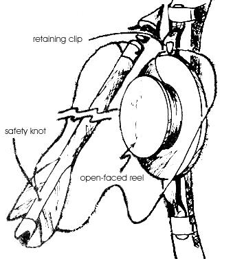
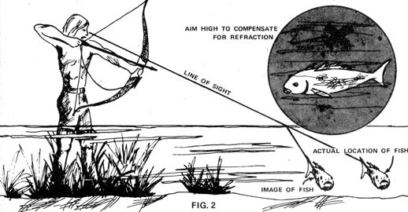
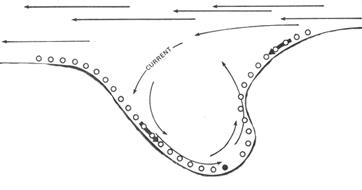

The majority of folks in this country have traditionally been too proud (or too well-fed) to "stoop" to eating so-called "trash" fish such as carp. Which suits a certain minority of reverse-status gourmets just fine. Because if they're properly prepared, carp (and other bottom feeders) can be lip-smackin' good... as the three articles in this special section point out. And, as the authors whose work appears here also note, putting tens-even hundreds-of pounds of that eatin' on the table isn't nearly as difficult as you might have thought.
The cove is still and brown from the feeding of numerous fish In the mud-grown weeds. Highstepping like a heron, you pull your left foot out of 14 inches of 80° water and start to slide it back In, toes first. Your attention all this time is on the movements of a barely visible carp nibbling at the roots of a sweet clover plant. Its head is down and the muddy water has kept it from seeing your approach.
Carefully you raise the longbow you're carrying as your toes approach the bottom when-oh no!-a 12 pound fish makes the water boll under your foot and-in a panic to escape-rams your right leg, nearly knocking you over. As you try to regain your balance, your left foot comes down hard with a noisy splash.
And now you're in the midst of a stampede. Mud billows up all around. You look for a chance to get off a quick shot, but as usual the rushing carp are too swift and too hard to see. Their only traces are fast-moving wakes on the surface and the feel of pressure waves against your feet. Then all is calm again . . . except your heartbeat!
The above scene is a common one for those who stalk carp with bow and arrow-. . . and it may or may not ruin the day, depending on how the hunt is organized and carried out. Here's how we do it at Grand Coulee Dam's Lake Roosevelt, where the fish we catch range from 3 to 12 pounds in weight and measure in at 16 to 36 inches.
Hunting carp by my method requires a longbow of at least 30 pounds' pull. I use a 44-pound bow . . . and even then the carp's large, clearly defined scales-which make it readily distinguishable from other species-are thick enough to make my arrows glance off unless they hit at an angle of nearly 943 degrees.
On the other hand, too heavy a weapon will wear out your arm by the time you've bagged one fish. This is true because for every shot you take you're likely to have drawn six or seven times, waited for the carp to turn to the right position . . . and then, when it didn't, released the pressure slowly so as not to frighten the other fish in the area by quick movement. Keep this fact in mind, and choose a bow you can be comfortable with for four or five hours:
It's just as essential to select a fishing arrow that suits the job. The missile's shaft must be made of a material that won't be harmed by water . . . usually fiberglass of some sort. Many such arrows, though, are of hollow-spun construction and are unsuitable for carp. I've seen a stricken 12-pounder snap one in half by flipping against the bottom just as the hunter grabbed the shaft. Solid-cast fiberglass shafts, however, won't break and their greater weight provides better penetration of the water.
The points of fishing arrows are conical and armed on the trailing edges with welded spring steel wire projections (see Fig. 1). The heads can be double- or single-barbed, threaded or not, and the type you choose is a critical consideration.
I recommend double-barbed points. An arrow's head will pass through a carp's body with ease if the fish's spine is missed . . . and if the arrow doesn't pierce cleanly, two projections will hold much better than one.
I also prefer a threaded head, which allows me to remove the point from the shaft before I pull the arrow out of the fish . . . thus causing less disturbance to the water and less damage to the catch. (Ragged wounds tend to collect mud and weeds which must be trimmed out of the meat later on.)
There are several brands of bow-fishing reels on the market and none of them has moving parts. The type I've shown in Fig. 1 is simply an open spool with a clip at the top to prevent the line it holds from falling off before a shot. The hoop type-made with a central opening through which you shoot-functions in the same way.
It's important to keep the clip on one of these reels properly adjusted. If it's set too tightly the clamp will not only slow your shot but also fray the braided nylon line at the point of contact. The sudden breakage that might result could leave you helplessly watching as your $2.50 arrow disappears into the deeps like the periscope of a rapidly submerging submarine.
A second spot where the line is likely to fray is the point at which it's tied to the shaft . . . and just where that is is a matter of preference. Fig. 1 shows an arrow with two holes for the line, one at each end. Some brands, however, have only one hole (near the nock) . . . and in that case I recommend drilling a second (near the point), because I believe that the arrow flies truer with the weight of the line's drag attached to the head end.
The drawback to fastening the line near the arrow's point, however, is that the cord is more likely to be cut by fishbones in that position. (In fact, it almost certainly will be cut if your shot penetrates the bony head of a carp . . . which is one good reason why you should always aim for the median line just behind the gill flap.) In order to hold my arrow in case of such I thread my cord through the hole next to nock and tie a big enough knot-at any point between the holes-to prevent the broken cord from pulling out .
There are all kinds of accessories for the Compleat Fisherman but you'll really need only a single additional piece of equipment . . . if you want more than one fish per excursion, that is. A catch bag is the tool that makes it possible harvest a larger number of carp from a single cove before all the skittish fish are scared away. A burlap feed sack, with a cord or small rope laced over the mouth for a drawstring, is ideal. The closure twine does need to be about ten feet long however, so that the floating bag will trail far enough behind so that it won't scare your next target.
You may be wondering why I don't use a boat. . . which, in some waters, would indeed be desirable. My father used prowl the swamps of the Southeast with a flat-bottom rowboat, gaffing or pitchforking carp and flipping them aboard. It was a good method for those parts . . . one that increased his range and protected him from water and leeches.
Here in the open waters of the West, however, a boat seems to be a disadvantage. Any time the carp have deep water under them, they can disappear too rapidly to allow a shot. It's just as well, then, that our area's worst danger to waders is nothing to more serious than thorny weeds.
Now that you're equipped, its time to discuss the carp's habits . . . and its nature can be summed up in one word: efficiency.
The creature you're about to pursue is, first of all, most my effective feeder. Its gills are equipped with strainers so that every breath drawn also pulls in a bit of food in the form algae and tiny free-swimming organisms. In addition, carp are very active grazers in the weeds that grow on mudflats. They' even lunge out of the water-slurping and grunting like pigs- to grab mouthfuls of grass from an overhanging bank!
The carp's metabolism allows a far better feed-to-weight; gain ratio than that of most fish . . . and, because these giant cousins of goldfish eat low on the food chain, they're less likely than game varieties to be contaminated by pollutants which become more highly concentrated as they pass through the systems of several species.
Efficiency is also seen in the carp's patterns of movement. When the water is warm and the relaxed fish are just cruising about, they'll usually move with the current (if there is any). This knowledge can help you increase your catch.
Next to the bank, for instance, look for your quarry to head upstream with the eddy or back current . . . and remember that there's also a thermal current, caused as the heated water on the edge of a shallows spreads over the surface of the main body. This action will cause some cold water to be drawn into the bottom layer of the shallows. Thus, at the mouth of a cove, incoming fish will most likely be swimming at a greater depth than outgoing.
The one time carp are extravagantly inefficient is in spawning, when each mature female will lay one to two million eggs. This event occurs as soon as the temperature of the shallows reaches 70° to 80° F . . . usually mid-June here in Washington State.
Carp don't engage in any nest preparation or courting. Males simply recognize a ripe female by her smell, and begin to follow her closely. If more than one are attracted, they'll push and shove at each other for position and the female will often make a short run to lose most of her suitors. Then she'll scoot along on her side in 6 to 12 inches of water and spew out eggs while a male or two follows alongside spreading milt over them. All else is left to chance.
Like most other animals, carp become relatively oblivious of all else when involved in an orgy . . . and you can make a great deal of noise in the water during a riotous spawn without stampeding these otherwise cautious creatures. It's even possible to bag a pickup load of carp in one day during the height of the action . . . but please don't do so. Remember that thousands of eggs need to be laid to ensure one future adult, and take care not to decimate the breeders. Besides, how many of those fish would you have time to process before they spoiled?
Some years, the carp here on my favorite lake seem to spawn in less than a week. As a rule, though, the breeding takes place during a month of intermittent activity (depending on the warmth of the weather and the resulting temperature of the shallows). We put away our year's supply of fish during a period that stretches between the start of spawning and three weeks after the mating season's end.
Carp have a huge appetite after they've mated and the fish can be stalked as they feed with their heads buried in the weeds. Sometimes their rooting will have the water so muddy that only their tails can be seen. When that happens, you can stalk to within eight feet of one of the fish and hold your bow at the ready until you can see the carp clearly.
Don't be surprised, incidentally, if one of your prey suddenly turns and swims straight up to you. Fish have a real sense of curiosity. You'd better freeze during this inspection . . . and even so, 60 percent of the time, the inspector will sound the alarm. If he doesn't, you may be able to draw a bead on the inquisitive fellow after he's taken his eyes off you.
Except when carp are in the midst of spawning, it pays to scout the area you plan to hunt. The most accessible quarry will be found in little coves and inlets . . . and there's a science to harvesting such waters.
Carp and all other fish, you see, have a sixth sense known as the lateral line . . . a system of nerves that runs the length of the body and registers the slightest changes in water pressure. The fish can "read" the nature of these signals and tell what's happening in the surrounding area.
If a hunter starts his stalking at the inland tip of a cove, the first prospect he spooks will be likely to scare away most of the others in the whole bay. This happens because a frightened fish seeks depth and open water as fast as possible . . . and a large, panic-stricken carp makes a shock wave that can be detected by its companions for a considerable distance. These react likewise, to create a domino effect that dissipates only after about 500 feet in a still, enclosed inlet.
If, on the other hand, a cove is hunted from its mouth, only those fish at the open end will be scared off by the first shot. Because the shock wave made by any aroused fugitive now spreads in a "V" from its nose, back along its sides, and then dissipates behind it in deeper water, very little warning is passed on to the easily hunted, shallow-water fish ahead.
Refer now to Fig. 3, which illustrates the most efficient order for two people to hunt a wide cove. In this case the current through the reservoir runs from east to west . . . and as you enter the water on the east side you may bag a prize immediately without bothering any of its neighbors closer to shore. If the two hunters now stand 12 to 20 feet apart and turn to look shoreward parallel to the east side of the bay, they may-if many fish are present-be able to remain station ary and wait for cruising carp to swim up to them.
If waiting tactics don't result in enough action, the person who stands deepest in the water should begin an advance (leading his partner by 12 to 20 feet). The lines of small circle in Fig. 3 represent the course followed on this hypothetical hunt.
When the point of the cove is reached, the pair leave the water and move quietly away from the shoreline (X's marks their path on land). If the catch bags are too full to carry easily, this is the time to empty the sacks and dispatch the fish by hitting them between the eyes with a club or rock.
The partners then circle around to the west, well away from the shoreline to avoid scaring the fish. On the other side of the cove's mouth they re-enter the water and proceed as befort . . . usually with less luck than they met with on the first pass. In a very large bay it might then be worthwhile to start over again on the east side. Normally, though, my neighbor and I hunt three or four inlets per trip and bag two or three fish apiece from each cove. This kind of "day" is usually about four hours long.
One exception to the strategy I've described: In a narrow fingerlet of a cove, 200 feet or less in width, a pair of hunters would do best to enter i,vm opposite sides of the mouth and stay on their respective banks as they work toward. the tip of the inlet.
The hardest part of hunting fish-aside from being patient-is the difficulty of seeing into the water. If the sky is overcast, the reflection's of the clouds may be brighter than the light coming out of the water. On a windy day, the ripples on the surface will diffuse light transmission and increase glare. Thus it's best to hunt on a calm, clear day after a period of weather that has been warm enough to heat the shallow waters.
To shoot at even a clearly visible fish only eight inches under the surface-the maximum depth I'd recommend attempting-you must compensate for the refraction of light at the water's surface. (See Fig. 2.) The best solution is to try only for shallow-swirpming carp when possible. Later in the season--when you're more experienced and the fish are swimming deeper-you can experiment with "longer" shots.
Carp, -as I've already mentioned, often muddy the water with their feeding. If that's the case, stalk to within eight feet of your quarry, and hold your bow at the ready until you can see the fish clearly. To shoot blindly, by guess, is to invite a miss or-worse yet-a strike that wounds the prey but doesn't secure it. Either will cause enough disturbance to scare away all nearby carp.
When you have a carp on the line, it's important to bag the catch with as little disturbance as possible. You must guard against scaring other fish, of course, and you also have to other fish, of course, and you also have to worry about losing your prey or your arrow.
My procedure is to grab the outflowing line with one hand while holding the bowstring with my teeth to free the other. Then-moving my feet as little as possible-I pull the carp close, grip the arrow, and push its point into the lake bottom so the fish can't slip off.
With the fish pinned down this way, I haul in the catch bag that's tied to my waist. The sack's mouth is opened with the help of a couple of the fingers on the arrow-holding ham Then one hand slips under the carp and lifts the lower portion of the shaft, while the other manipulates the mouth of the bas and the arrow's opposite end. Somehow the struggling skewered creature is raised and its head stuffed into the sack opening. Finally it's safe to reach in, unscrew the arrow, point, pull out the shaft, and let the catch fall into the bag Even as I pull the drawstring I'm looking for my next target . . . and sometimes shoot before I've even respooled my line.
In the West, carp are considered an undesirable species by the game management bureaucracy. As a result, entire lakes are sometimes poisoned to get rid of them and are late: replanted with more valued "game" fish . . . which actually produce less pounds of food per acre. This attitude-while somewhat unreasonable-does have one advantage for us: No, license is required to take carp and no rules govern season, bag limits, or catching methods. Your state's laws may be different, however, so be sure to check the local regulations before you hunt.
In this area-where the law allows me to harvest these "trash fish" by the system I find most efficient-the effort of doing so is most rewarding. This past summer, my neighbor and I were able to hunt about five or six days . . . and our catch amounted to at least 400 pounds live weight. That's a lot of carp, especially since even one goes a long way. Just a single 30-inch fish enables six to eight people to feast on strips of fillet, breaded in home-ground whole wheat flour and fried in deep fat. Ummm!
|
|
|
 |
|
 |
 |
|